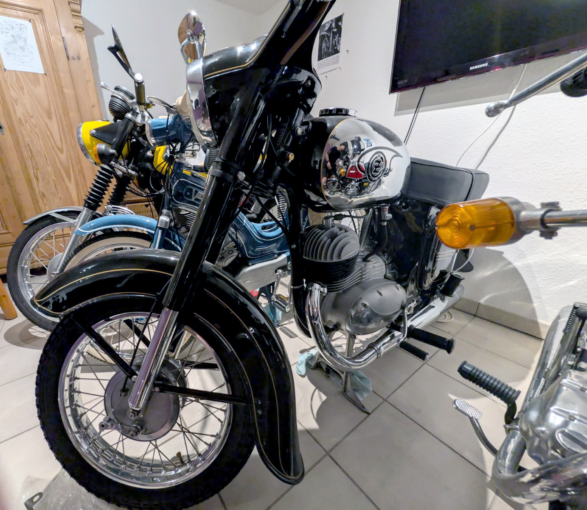
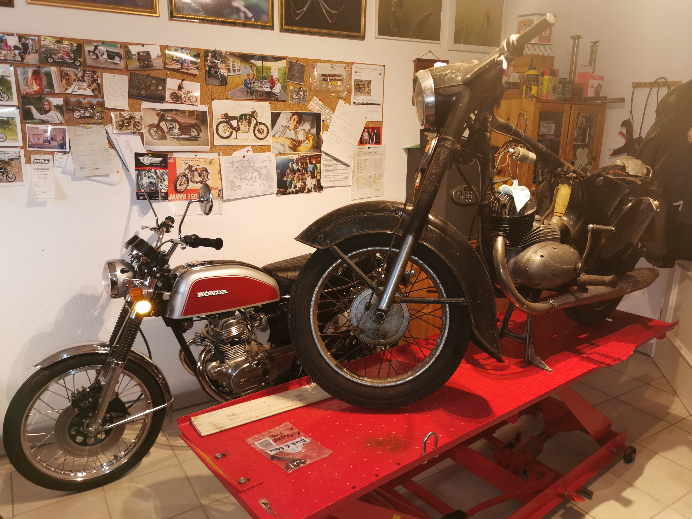
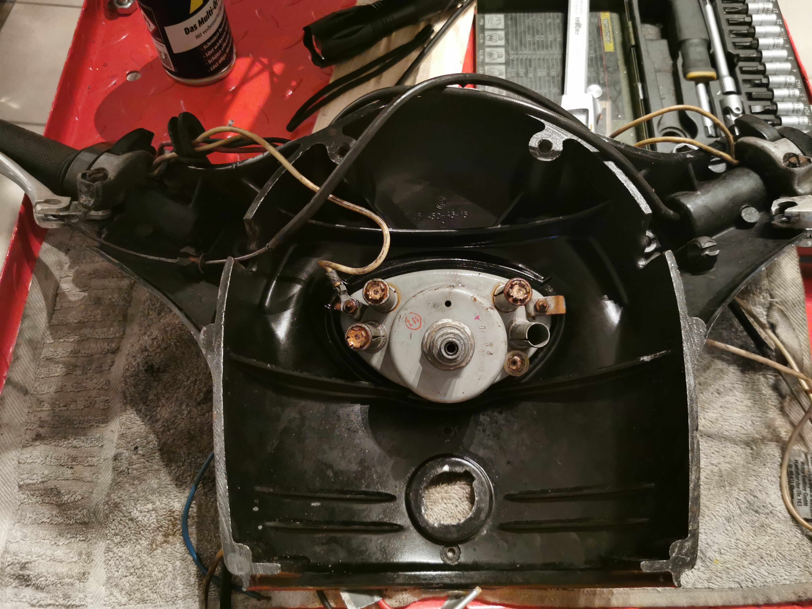
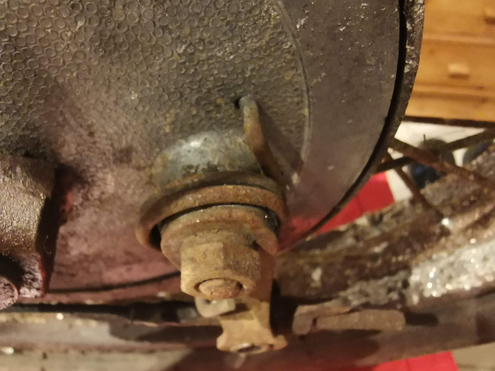
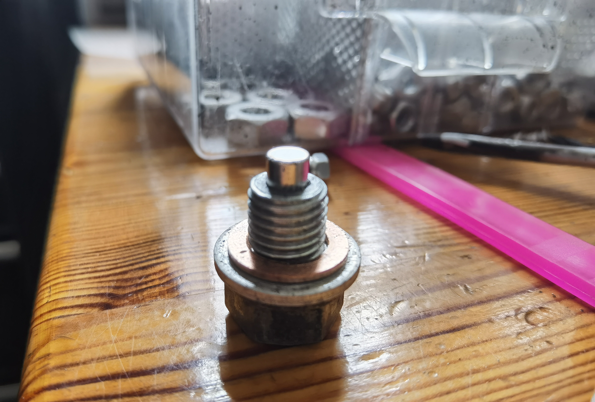

Projekt · CZ
CZ 125 453 · 1963
Die Restaurierung einer CZ 125 453 – von der Werkstattaufnahme bis zum wieder vollständigen Motorrad.
Bildergalerie
Eine Restaurierung in Bildern
Ausgewählte Stationen der Aufarbeitung: vom Ausgangszustand über einzelne Details bis zum fertigen Motorrad.





